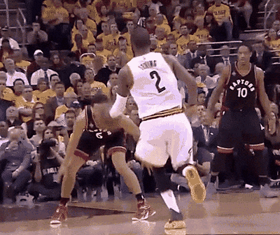

历史成就
一座总冠军、八次全明星，以及几个没拿到的奖
1NBA 总冠军
8全明星
3最佳阵容
2国家队金牌

荣誉年表
| 年份 | 荣誉 |
|---|---|
| 2011 | NBA 选秀状元，被克利夫兰骑士队选中 |
| 2012 | 赛季最佳新秀，入选最佳新秀阵容一阵 |
| 2013 | 全明星三分大赛冠军 |
| 2014 | 全明星赛最有价值球员 |
| 2014 | 随美国男篮夺得首届男篮世界杯冠军，当选赛事 MVP |
| 2015 | 赛季最佳阵容第三阵容 |
| 2016 | 随克利夫兰骑士队夺得 NBA 总冠军 |
| 2016 | 随美国男篮夺得里约奥运会金牌 |
| 2019 | 赛季最佳阵容第二阵容 |
| 2021 | 赛季最佳阵容第三阵容 |
荣誉统计
| 项目 | 数量 | 备注 |
|---|---|---|
| NBA 总冠军 | 1 | 2015-16 赛季 |
| 全明星 | 8 | 先后效力四支球队 |
| 最佳阵容 | 3 | 二阵 1 次、三阵 2 次 |
| 常规赛 MVP | 0 | 未获得 |
| 总决赛 MVP | 0 | 2016 年由队友詹姆斯获得 |
| NBA 75 大 | 未入选 | 2021 年公布的 75 周年阵容 |
一球定生涯
2016 年总决赛第七场，终场前 53 秒，欧文在右侧三分线外面对库里的防守投中一记三分，骑士以 92 比 89 领先，并把这个比分守到终场。那是克利夫兰半个世纪以来的第一座职业体育冠军，也是 NBA 总决赛历史上唯一一次 1-3 逆转。
这一球常被拿出来单独讨论，因为他其余的荣誉并不算厚：没有常规赛 MVP，没有总决赛 MVP，最佳阵容只有三次。但把总冠军、关键球和八次全明星放在一起看，他仍然站在同时代后卫的第一档里。

2016 年夺冠后，欧文举起总冠军奖杯。